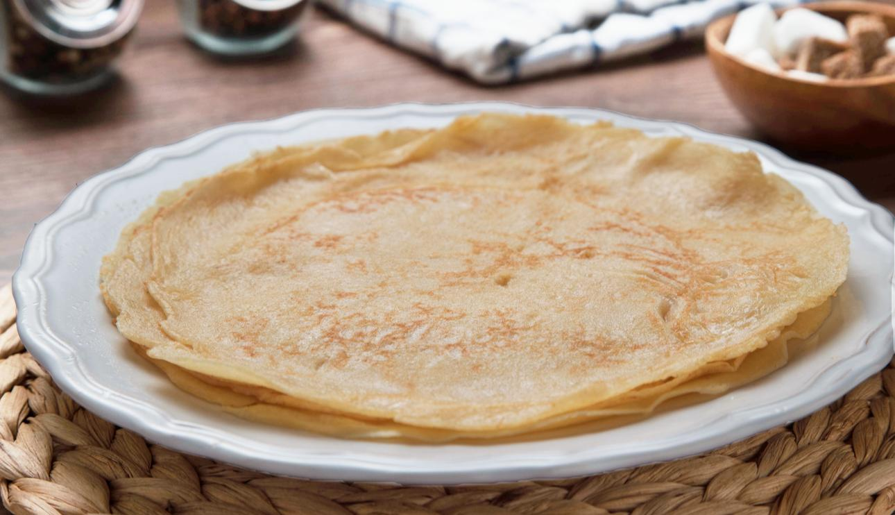

Recetas de Odin
Lasana

Unos simples creps muy faciles de hacer
- Leche
- Harina
- Huevos
- Mantequilla
- Azucar
- Batir los huevos, añadir el azúcar, la mantequilla fundida, la leche y la harina tamizada y mezclarlo hasta obtener una mezcla homogénea. Pasarla por un colador y dejarla reposar durante 30 minutos en el refrigerador.
- Fundir un poco de mantequilla en una sartén para engrasarla, verter un cucharón pequeño de la masa y dorar el crep por ambos lados; preparar el resto de igual forma.